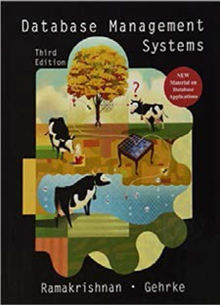
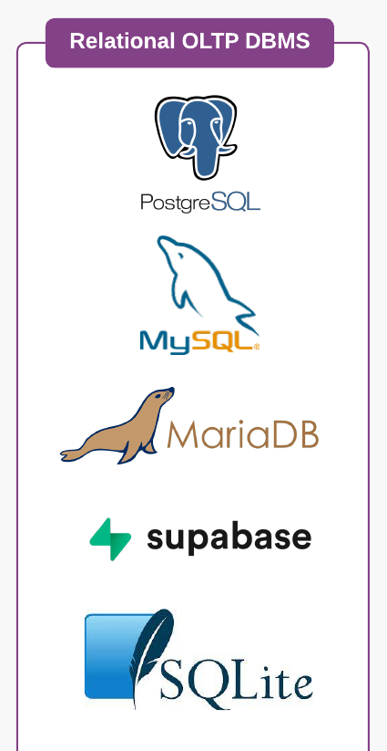

gantt
dateFormat M/DD/YYYY
axisFormat %W
section Topics
ER Models : m1, 1/7/2024, 3w
Rel. Algebra: m4, after m1, 2w
Normal forms: m5, after m4, 3w
SQL : m6, after m5, 4w
Adv. SQL: m7, after m6, 5w
Welcome to CMSC408
Lecture 1
Wednesday - Aug 21, 2024
Housekeeping
Discussion items
Complete the pre-class survey
Introduce yourself on the discussion group
Join the discord
Form your project team
Lecture topics
Course overview
Intro to databases
| Module | Week | Date | Day | Lectures | Deliverables/Notes |
|---|---|---|---|---|---|
| ER Models | 1 | 8/21 | Wed | MTG1: L1 (Welcome to CMSC408) | Quiz 1 due (Pre-class Survey) |
| ER Models | 1 | 8/23 | Fri | PrjDel 1 due (Student introductions) | |
| ER Models | 1 | 8/25 | Sun | PrjDel 2 due (Team formation) | |
| ER Models | 2 | 8/26 | Mon | MTG2: L2 (Entity-relation models 1) | Last day to add/drop |
| ER Models | 2 | 8/28 | Wed | MTG3: L3 (Entity-relation models 2) | |
| ER Models | 2 | 8/30 | Fri | PrjDel 3 due (Team update) | |
| ER Models | 2 | 9/1 | Sun | HW1 due (DE Tool Review) | |
| ER Models | 3 | 9/2 | Mon | NO CLASS - University closed (Labor day) |
I’m glad you’re here!!!!
CMSC 508 - Database Theory
- Semester course;
- 3 lecture hours. 3 credits.
- Prerequisite: CMSC 303 with a minimum grade of C.
Design and implementation of relational database systems. Emphasis is placed on entity-relationship diagrams, relational algebra, normal forms and normalization. Introduction to SQL. Discussion of physical level issues.
Students will be required to complete a design project and give an oral presentation of the project.
Recommended Textbooks

Do I need really need a text book?
No, you don’t. These textbooks are really good and package lots of information into a single place.
Life is a database and from my perspective it’s all about speed of retrieval. When I’m building databases, I can’t EVER recall pulling out a text book to look something up!
Canvas is the OFFICIAL platform
YOU are responsible for your own LEARNING. My role is GUIDE and CURATOR.
WE are working together as a TEAM so that at completion of the course, you are comfortable with designing and building databases.
ANYTHING posted to the course canvas is FAIR GAME to be tested. If I think it’s important enough to be shared as part of the course materials on Canvas, I believe that it’s important enough for you to be familiar with it and possibly tested on it.
I will OFTEN not be able to cover all the material relevant to a specific topic in class. That does NOT mean that it isn’t important. Even if I don’t complete the lecture slides during a class session, you should be familiar with ALL the material in the slides. ANYTHING in the lecture slides is FAIR GAME for testing.
Statement on Generative AI
Grades for the course are assigned based on YOUR work, not the work of chatgpt, bard or some other generative AI tool. Grades help YOU understand where you are on the journey towards mastery of any pile of material.
Generative AI can be a real asset in computing. You don’t need to memorize syntax, or struggle to hunt around to find some arcane code necessary to make your program work. But remember, it is supposed to be YOUR program.
Homework assignments are designed to give you practice using the tools to create programs. The focus of the homework assignments is on the higher level cognitive skills - designing, comparing, judging, analyzing, assessing. Use of Generative AI IS permitted on homework assignments and the semester project, in so much as it can help the coding go faster. YOU are responsible for the design and should be able to explain it to anyone that asks.
Quizzes are designed to test your knowledge of the course material. Use of Generative AI is NOT permitted on any of the quizzes.
See this document to learn more!
ABET Student Learning Outcomes
SLO1 - Analyze a complex computing problem and apply principles of computing and other relevant disciplines to identify solutions;
SLO2 - Design, implement and evaluate a computing-based solution to meet a given set of computing requirements in the context of the program’s discipline;
SLO3 - Communicate effectively in a variety of professional contexts;
SLO4 - Recognize professional responsibilities and make informed judgments in computing practice based on legal and ethical principles;
SLO5 - Function effectively as a member or leader of a team engaged in activities appropriate to the program’s discipline;
SLO6 - Apply computer science theory and software development fundamentals to produce computing-based solutions;
SLO7 - Acquire and apply new knowledge as needed, using appropriate learning strategies.
CMSC 408 - Learning Outcomes
Demonstrate an understanding of the concepts underlying database design. (ABET SLO 1, SLO 7)
Analyze problems to identify data requirements, types and relations. (SLO 1)
Create E-R and relational designs from problem statements. (SLO 2)
Design data structures and functions to store and process the information. (SLO 2)
Design and implement databases using SQL language. (SLO 6)
Query and manipulate data using SQL language. (SLO 6)
Design and implement reports using data queried from a database. (SLO 3, SLO 6)
Work effectively as part of a team to design, implement and deploy a database-driven web application (SLO 5)
Communicate project requirements, design decisions, and progress effectively to team members and stakeholder (SLO 3)
Incorporate strategies to ensure safe and secure storage and access to the database. (SLO 4)
CMSC 408 - Tool sets and rationale
Tool sets we’ll be using …
SQL, MySQL, and SQLITE
VSCODE and various extensions
Quarto, mermaid and graphviz
GIT, GH and GITHUB
Python, Pyenv and Poetry
Docker and docker compose
What you should expect …
This is a programming class. Be prepared for TONS of coding.
We’ll be learning and improving through practice and repitition. There will be LOTS of opportunity to practice.
We’ll be learning to code documentation and graphics using Quarto with markdown, mermaid and graphviz.
We’ll be learning how to communicate designs using ER diagrams and crows-feet diagrams.
We’ll be learning to create, retrieve, update and delete database objects using SQL.
We’ll be learning docker to containerize a database and application and automate the reptition.
CMSC 408 - Topics over time
The class is organized in modules. The GANNT chart below highlights the topics and their order.
- Homework assignments introduce and reinforce topics discussed in class.
- Quizzes test understanding of the topics where appropriate.
- Lectures, homeworks and quizzes are organized in a way that complements the successful completion of the semester-long project.
CMSC 408 - Assessment and Grading
This will be a busy semester! There will be items due each week.
There will be a mix of activities
| Deliverable | Pct | Number of items |
|---|---|---|
| Homework | 40% | 9 submissions done individually |
| Quizzes | 30% | 5 quizzes taken on-line using respondus |
| Project | 30% | 12 submissions as part of a team |
CMSC 408 - Assessment and Grading
This will be a busy semester! There will be items due each week.
Homework Assignments
Homework assignments are done individually. Homeworks will be distributed using GITHUB classroom; a link will be provided in the Canvas assignment page. Homework repos will be submitted to Gradescope. Homework HTML reports will be submitted to Canvas. Rubrics will be provided. REVIEW EACH RUBRIC CAREFULLY!
gantt
dateFormat M/DD/YYYY
axisFormat %U
section Homework<br/>(9 at 40%)
(first day of class): milestone, fdc1, 1/7/2024, 0d
HW1 - DE Tool review: milestone, h1, 1/20/2024, 0d
Homework 2: milestone, h2, 1/29/2024, 0d
Homework 3: milestone, h3, 2/10/2024, 0d
Homework 4: milestone, h4, 3/2/2024, 0d
Homework 5: milestone, h5, 3/16/2024, 0d
Homework 6: milestone, h6, 3/30/2024, 0d
Homework 7: milestone, h7, 4/6/2024, 0d
Homework 8: milestone, h8, 4/28/2024, 0d
HW9 - Course Evaluation: milestone, h10, 4/28/2024, 0d
(last day of class): milestone, ldc2, 4/28/2024, 0d
CMSC 408 - Assessment and Grading
This will be a busy semester! There will be items due each week.
Homework assignment policies
I observe flexible deadlines for homework, NOT FOR QUIZZES OR DELIVERABLES!
Each homework has a timeliness score in the rubric. On-time gets full credit. The timeliness score is reduced slowly past the submission date.
You will ALWAYS get credit for submitting assignments. ALWAYS turn something in! I want you to get the practice and LEARN!
I realize this is NOT your only class. But don’t get too far behind!
READ homework rubrics to see expectations for each assignment. The rubrics will help you understand what’s important and where you should spend your time.
The homework assignments are generally aligned with the semester project, so that one reinforces the other. It pays to keep up!
CMSC 408 - Assessment and Grading
This will be a busy semester! There will be items due each week.
Quizzes
Quizzes will be administered on-line using the Respondus lockdown browser. It is the responsibility of the student to ensure that Respondus works. Quizzes will be adminstered outside of class. NO LATE QUIZZES.
Practice quizzes will be available. You can take practice quiz as many times as you like. Practice quiz will look exactly like the actual quiz. Expect each quiz to take 30-minutes or less.
gantt
dateFormat M/DD/YYYY
axisFormat %U
section Quizzes<br/>(5 at 30%)
(first day of class): milestone, fdc1, 1/7/2024, 0d
Quiz 1 - Pre-class survey: milestone, q0, 1/7/2024, 0d
Quiz 2 - ER Models: milestone, q1, 1/23/2024, 0d
Quiz 3 - Relational algebra: milestone, q2, 2/11/2024, 0d
Quiz 4 - Normal forms: milestone, q3, 2/27/2024, 0d
Quiz 5 - SQL basics: milestone, q4, 3/19/2024, 0d
(last day of class): milestone, ldc2, 4/28/2024, 0d
CMSC 408 - Assessment and Grading
This will be a busy semester! There will be items due each week.
Semester-long project
Students will work in teams of 2 on a semester-long project. The project will require the students design, build and deploy a database driven web application. Team Update deliverables are brief surveys reflecting on project status, and should only take about 5-min to complete.
gantt
dateFormat M/DD/YYYY
axisFormat %U
section Project<br/>Deliverables<br/>(12 at 30%)
(first day of class): milestone, fdc1, 1/7/2024, 0d
D01 - Student introductions **: milestone, p1, 1/11/2024,0d
D02 - Team formation **: milestone, p2, 1/13/2024, 0d
D03 - Team update: milestone, p3, 1/18/2024, 0d
D04 - Team update: milestone, p4, 1/25/2024, 0d
D05 - Proposal video **: milestone, p5, 2/3/2024, 0d
D06 - Team update: milestone, p6, 2/8/2024, 0d
D07 - Team update: milestone, p7, 2/22/2024, 0d
D08 - Design report **: milestone, p8, 3/2/2024, 0d
D09 - Team update: milestone, p9, 3/8/2024, 0d
D10 - Web docker **: milestone, p10, 3/23/2024, 0d
D11 - Team update: milestone, p11, 4/4/2024, 0d
D12 - Final submission **: milestone, p12, 4/28/2024, 0d
(last day of class): milestone, ldc2, 4/28/2024, 0d
CMSC 408 - Assessment and Grading
This will be a busy semester! There will be items due each week.
Summary and grading schedule
Below are tables presenting the grading scheme and deliverable list for the class.
Deliverables
| Deliverable | Pct | Number of items |
|---|---|---|
| Homework | 40% | 9 submissions done individually |
| Quizzes | 30% | 5 quizzes taken on-line using respondus |
| Project | 30% | 12 submissions as part of a team |
Grading
| Score | Grade | Fall 2023 |
|---|---|---|
| 90 <= X | A | 112 |
| 80 <= X < 90 | B | 13 |
| 70 <= X < 80 | C | 2 |
| 60 <= X < 70 | D | 1 |
| X < 60 | F | 3 |
Advice from your peers
From course evaluation responses, Fall 2023:
Discuss the level of difficulty of this course, the pace of the course, and the level of effort required to complete the work in this course.
Advice from your peers
This course is easy if you keep up with the work. Having assignments due every week along with the semester-long project is a lot to take on.
I think there is a lot of work involved with this course, but so long as you stay on top of the assignments, you will be sucessful, as they are not really difficult, more so there is just a large quantity of them.
The course was definitely difficult if not well prepared but the professor gives every single tool one needs to succeed. The pace was perfect and there is nothing I would change about it.
The pace was quick and the work was not easy. Each week the homework presented new concepts that were progressively more difficult, and it was very easy to fall behind. Not the class with the sort of work you can leave till the last minute, minimum, a couple hours per assignment.
Lot of the material that was covered in this class was all very new to me, but Professor Leonard designed the course in a way that wasn’t too overwhelming. I felt like the pace of the course was just right. Even the times I was falling behind a little bit, I was able to pick myself back up pretty quickly since the deadlines weren’t super strict.
Advice from your peers
I found the course difficulty to be well balanced. If a student goes to class, asks questions, and makes an effort to do their assignment they should have no problem at all passing. The pace of the course was perfect and allowed enough time for each unit to be processed before moving on to the next one.
The workload for this course is very challenging to manage. Having to create a whole database and then do weekly homework assignments is very difficult.
This course required an intense amount of coding. However, given the clear expectations and due dates, I was able to plan ahead to meet deadlines.
This course is pretty easy, but I don’t think it needs to be harder. It takes not much effort but still I feel like I am very good with databases, api’s, even better at using python. I am still not good at writing queries though.
There is a large level of effort required to this course. Especially towards the end of the semester the assignments and projects can be time consuming. That being said the professor gives more than enough time to complete them and he is very helpful if a section ends up being confusing for the class.
This course was fairly difficult, but the professor made it very doable. The course pace was good, except by the end of the semester the pace gets really fast. 10/10 professor
In summary: Don’t panic, you got this!
A long time ago … in a galaxy far, far away …
Early history
1950s and early 1960s:
- Data processing using magnetic tapes for storage
- Tapes provided only sequential access
- Punched cards for input

Early history
Late 1960s and 1970s:
- Hard disks allowed direct access to data
- Network and hierarchical data models in widespread use
- Edgar “Ted” Codd defines the Relational data model
- High-performance (for the era) transaction processing

Modern systems
1980s:
- Research relational prototypes evolve into commercial systems
- SQL becomes industrial standard
- Parallel and distributed database systems
- Object-oriented database systems
1990s:
- Large decision support and data-mining applications
- Large multi-terabyte data warehouses
- Emergence of Web commerce

Modern systems
Early 2000s:
- XML and XQuery standards
- Automated database administration
Later 2000s:
- Giant data storage systems
- Google BigTable, Yahoo PNuts, Amazon, …
2022 and Beyond:
https://cacm.acm.org/magazines/2022/8/262905-the-seattle-report-on-database-research/fulltext#body-4

Open Source Data Engineering Landscape 2024

Open Source Data Engineering Landscape 2024

Why not use spreadsheets?
Spreadsheets DO work and they ARE viable!
On the surface spreadsheets share many common elements with databases
Entities
- Worksheets are Tables
- Rows are sometimes Records
- Columns are sometimes Fields
- Workbooks are Databases (collections of tables)
Operations
- find rows, insert rows, delete rows, update rows,
- add columns, remove columns
- create worksheets, delete worksheets
- create workbooks, delete workbooks
Why not use spreadsheets?
Suppose that to add a new person, you need to make changes to three tabs (e.g., ‘Personal Info,’ ‘Contact Info,’ and ‘Employment Info’).
- What happens if you are interrupted in the middle of the change and forget where you are? (Atomicity)
Imagine that one of the tabs in your spreadsheet has a formula that automatically updates totals or averages when new data are entered.
- What would happen if, during an update, the formula fails to recalculate properly? (Consistency)
Consider a scenario where two people are editing the spreadsheet at the same time, both trying to add new rows to the same tab.
- How might their changes conflict, and what issues could arise? (Isolation)
Suppose you have made all the necessary changes to add a new person in your spreadsheet and then your computer crashes before you can save the file.
- What happens to the changes? (Durability)
Why not use spreadsheets?
Imagine your spreadsheet contains sensitive information, such as personal or financial data.
- What controls could you put in place to ensure that only authorized users can view or edit specific parts of the data (Security)
Imagine that your spreadsheet currently manages a few hundred rows of data.
- What would happen if you needed to scale this to millions of rows? How would performance be affected, and what challenges might you face in managing such large volumes of data? (Scalability)
Imagine that your spreadsheet contains phone numbers across different tabs.
- What would happen if a home phone number was changed on one tab but not another? (Normalization and redundancy)
On Line Transaction Processing (OLTP) databases
This semester we’ll be exploring Relational, On Line Transaction Processing (OLTP) Database Management Systems (DBMS), like MySQL, Postgres, SQLITE, Oracle, DB2 and SQLServer.
A Database Management System (DBMS) is the software that enables users to define, create, manage, and interact with databases. It serves as an intermediary between the end users, applications, and the database, ensuring that data is organized, stored, retrieved, and modified efficiently and securely.
We’ll be focusing on the Relational model, where the DBMS stores entities and the relationships between these entities inside a single database (called a schema).
These databases bundle multiple changes to the database as a transaction. Transactions can be reviewed and rolled back (reversed).
ACID (atomicity, consistency, isolation, durability) is a set of properties of transactions intended to guarantee data validity despite errors, power failures, and other mishaps.
Changes to the database are communicated to the DBMS using a language called SQL, a structured query language. How does one pronounce SQL?

On Line Transaction Processing (OLTP) databases
Fast Query Processing: These databases prioritize quick query response times to ensure efficient and prompt processing of individual transactions, making them ideal for applications like banking, e-commerce, and order management systems.
High Transaction Volume: OLTP databases are designed to handle a large number of short, atomic transactions, such as inserting, updating, or deleting records, which are typically initiated by end-users in real-time.
Data Integrity and Consistency: OLTP systems implement ACID (Atomicity, Consistency, Isolation, Durability) properties to ensure that all transactions are processed reliably, maintaining the integrity and consistency of the data even in the event of system failures.
Normalized Data Structure: OLTP databases typically use a highly normalized schema to minimize data redundancy, optimize storage efficiency, and reduce the complexity of data manipulation during frequent transactions.
CMSC 408 - in a nutshell
We’ll apply entity-relation models to design and describe the contents of a database.
We’ll apply relational algebra to formally describe how we query the database.
We’ll apply normalization to ensure that we minimize redundant information in the database.
We’ll tie everything together using SQL.
gantt
dateFormat M/DD/YYYY
axisFormat %W
section Topics
ER Models : m1, 1/7/2024, 3w
Rel. Algebra: m4, after m1, 2w
Normal forms: m5, after m4, 3w
SQL : m6, after m5, 4w
Adv. SQL: m7, after m6, 5w
Housekeeping
Discussion items
Complete the pre-class survey
Introduce yourself on the discussion group
Join the discord
Form your project team
Lecture topics
Course overview
Intro to databases
| Module | Week | Date | Day | Lectures | Deliverables/Notes |
|---|---|---|---|---|---|
| ER Models | 1 | 8/21 | Wed | MTG1: L1 (Welcome to CMSC408) | Quiz 1 due (Pre-class Survey) |
| ER Models | 1 | 8/23 | Fri | PrjDel 1 due (Student introductions) | |
| ER Models | 1 | 8/25 | Sun | PrjDel 2 due (Team formation) | |
| ER Models | 2 | 8/26 | Mon | MTG2: L2 (Entity-relation models 1) | Last day to add/drop |
| ER Models | 2 | 8/28 | Wed | MTG3: L3 (Entity-relation models 2) | |
| ER Models | 2 | 8/30 | Fri | PrjDel 3 due (Team update) | |
| ER Models | 2 | 9/1 | Sun | HW1 due (DE Tool Review) | |
| ER Models | 3 | 9/2 | Mon | NO CLASS - University closed (Labor day) |

CMSC 408 - Databases